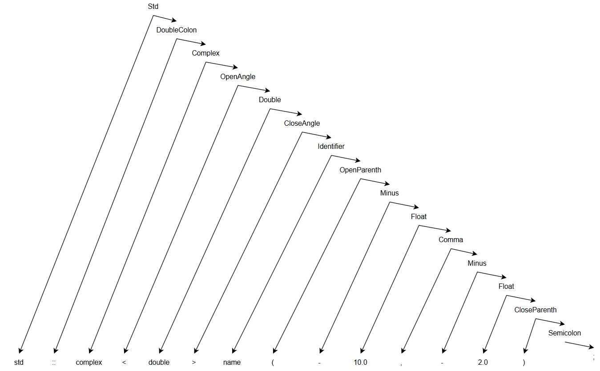

Согласно классификации Хомского, грамматика G[‹Std›] является автоматной грамматикой, так как все её правила относятся к классу праворекурсивных продукций (A → aB | a | ε). Синтаксическое дерево для данной грамматики G[‹Std›]:

На главную